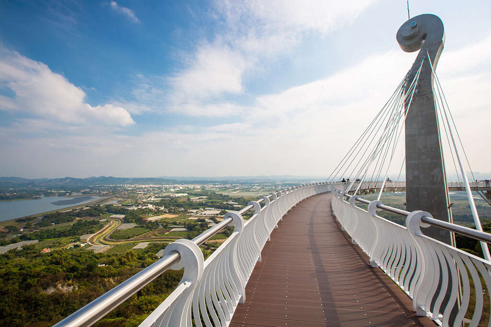
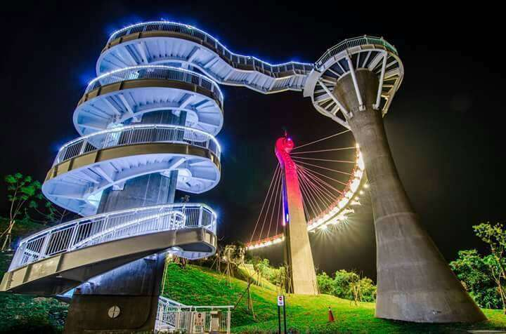
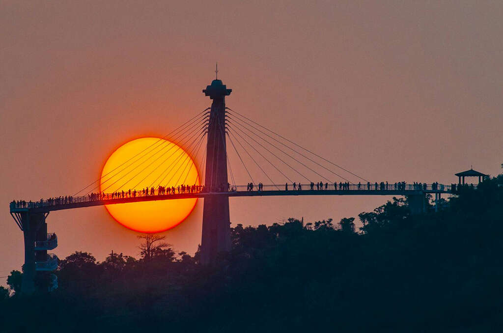
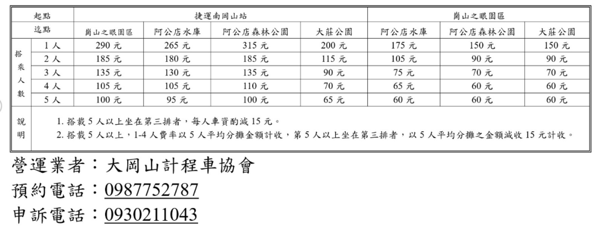
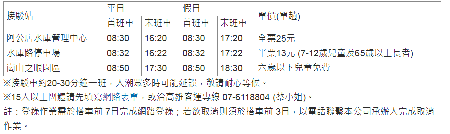
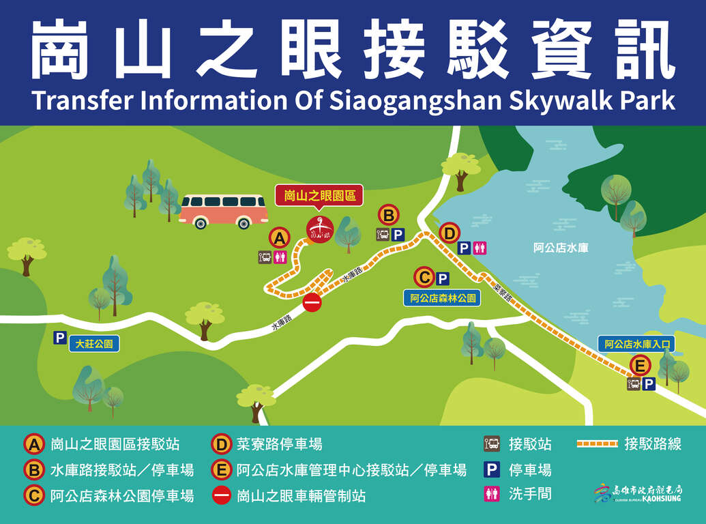

崗山之眼園區位於岡山區與燕巢區交界的小崗山，佔地約1.8公頃，清代詩人卓夢采以「岡山樹色」這首詩來形容本地縱翠疊碧、綠意如煙，駐立崗山之眼視野所及一片遼闊，品味詩意，千古幽情風采重現。
崗山之眼園區以天空廊道為主角，全長88公尺，以音樂為設計概念，採用鋼構斜張橋之形式設計，主塔橋為提琴意象呈現，鋼索即為琴弦，意表琴瑟和鳴之意，於末端的迴旋梯則是應和的口琴，階梯踏面琴鍵亦隨之響起，走在天空廊道上微風吹過，彷若演奏著自然的樂曲，享受雲端漫步的視覺與聽覺饗宴，也象徵小崗山重生的生命樂章。
本園區之規劃以尊重環境和生態保育為主。天空廊道可俯瞰阿公店水庫、阿公店森林公園、阿公店溪及其平原之美景，天候良好時更能遠眺壯麗之北大武山與周邊群山，高雄市地標85大樓、半屏山、壽山、臺灣海峽更可一覽無遺，山水景色盡收眼底。
賞景品茶香
崗山之眼→小崗山觀景台→大崗山風景區→午餐→泡茶品茗→廟宇巡禮晚餐(岡山老街/羊肉料理)
悠遊博物館
捷運紅線崗山南站→岡山文化中心/皮影戲博物館→台灣螺絲博物館→午餐(岡山老街/羊肉料理)→台灣滷味博物館→志斌豆瓣醬故事館崗山之眼→晚餐(大崗山風景區土雞料理)
軍事新體驗
航空教育展示館→軍史館→午餐(岡山老街/羊肉料理)→志斌豆瓣醬故事館→崗山之眼→晚餐(大崗山風景區土雞料理)
崗山之眼園區自 08 時30分至 17 時(假日及連續假日至18時)管制遊客機車及小客車進入，騎車或開車民眾需到周邊停車場先行停車，再轉搭接駁車或共乘計程車進入。
因山區路寬較窄小坡度較高，夜間民眾開車上下山請減速行駛、注意行車安全並遵守交通規則。
◾自行開車：
身障人士可出示相關證件通行崗山之眼交通管制哨(水庫路與大莊路2巷路口)，以私車方式開入園區，園區停車場設有無障礙停車格3格停放。
2.大眾運輸：
復康巴士：請洽專線 (07)740-7977 或高雄客運復康巴士網站。
無障礙計程車：共乘叫車專線、0987-752787、0958-499030。
※接駁公車皆屬一般中型巴士，因通往崗山之眼路寬及周遭樹木環境物關係，中型低底盤公車無法行駛。
◾捷運(須轉共乘計程車)
1.搭乘高雄捷運紅線到捷運南岡山站(R24站)，從1號出口搭「紅68」至大莊公園轉搭共乘計程車前往崗山之眼園區。 (紅68公車時刻表請參考高雄客運網站 )
2.共乘計程車：
(1)崗山之眼園區共乘計畫由本府交通局核定。
(2)於高雄捷運紅線南岡山站 (R24)、阿公店水庫管理中心、阿公店森林公園及大莊公園皆規劃有排班計程車區，提供民眾共乘。
(3)崗山之眼園區共乘計程車預約專線：0987-752787、0958-499030
(4)共乘費率依本府交通局核定之共乘費率收費如下
◾ 自行開車(須轉乘接駁車或共乘計程車)
1.國道路線
(1)國道1號→在岡山交流道出口下交流道→燕巢→安招路/186市道→左轉新生路→右轉菜寮路→阿公店水庫管理中心周邊停車場及接駁區。
(2)國道10號→燕巢交流道→義大路→右轉角宿路/186市道→直行接中興北路/高29-1區道→左轉工程路接菜寮路，約400公尺即到逹阿公店水庫管理中心周邊停車場及接駁區。
2. 停車資訊
(1)阿公店水庫管理中心：大客車停車格4格、小客車停車格113格(含無障礙停車格 3格)、機車停車格 36 格。
(2)阿公店森林公園：小客車 79 格、機車停車格 30 格。
(3)菜寮路停車場：小客車 13 格。
(4)水庫路停車場：小客車34格。
※ 崗山之眼園區：無障礙停車格 3 格 (身障人士得出示相關證明文件通行交通管制哨)。
※ 因停車空間有限，建議民眾搭乘大眾運輸前往。
◾ 接駁資訊
(1)中巴接駁車服務專線：高雄客運 07-6118804
(2)接駁站、收費方式及發車時間
※接駁車約20-30分鐘一班，人潮眾多時可能延誤，敬請耐心等候。
※15人以上團體請先填寫網路表單，或洽高雄客運專線 07-6118804 (蔡小姐)。
註：登錄作業需於搭車前 7日完成網路登錄；若欲取消則須於搭車前 3日，以電話聯繫本公司承辦人完成取消作業。
